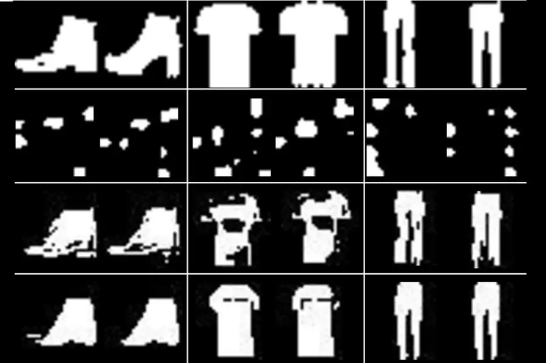

Quantum AI image generator is no match for ones on ordinary computers
Date Published:
Article linkThis article talks about how AI running on a Quantum computer can now generate recognisable images, like shoes, pants and shirts. My thoughts on this article is it is scary. I was listening to a podcast and they were explaining how chatgbt and other AI websites do not run on Quantum computers, so it is not that scary yet. Basically it was just spitting out things humans have already put on the internet and was not able to "fact check" becuase it doesn't know true or false apose to what humans have said on the internet. But this article is confirming that we now have AI generators in Quantum computers, which scares me because those computers can fact check and remove false information on its own, without the need for humans.